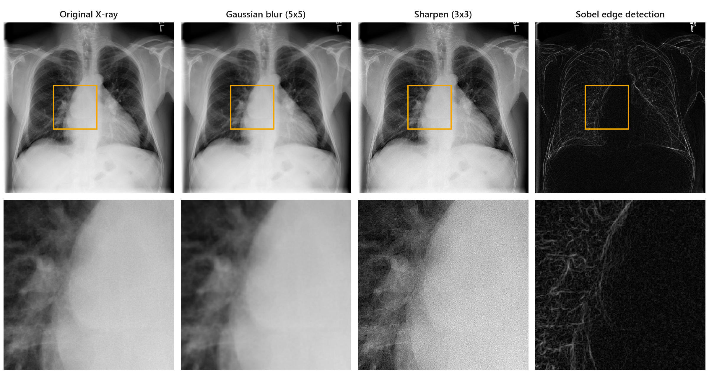
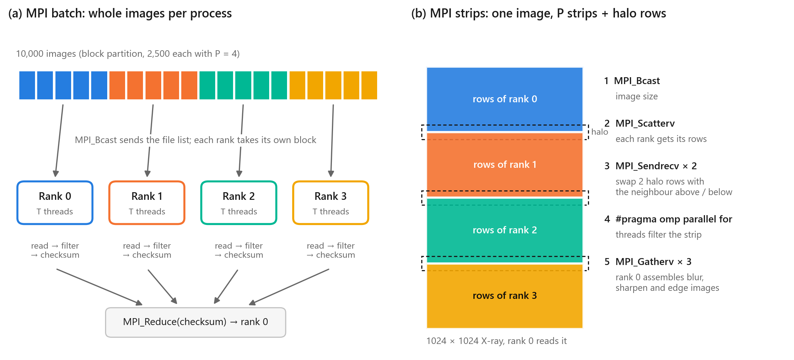
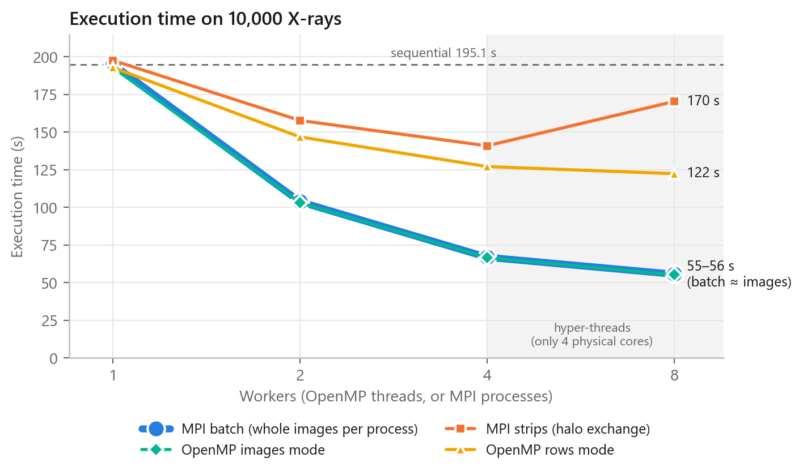
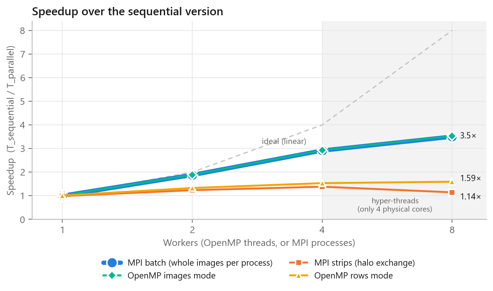
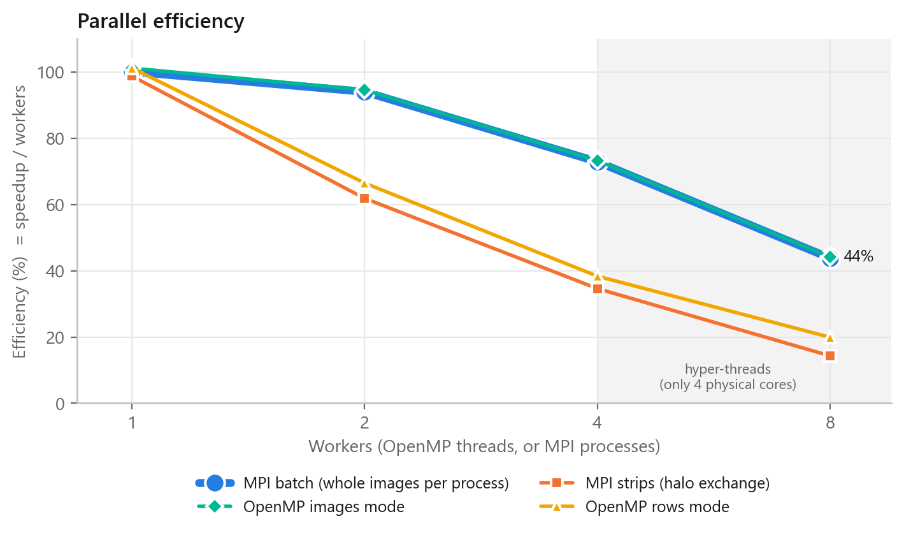
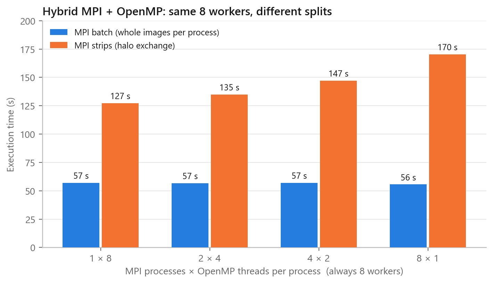
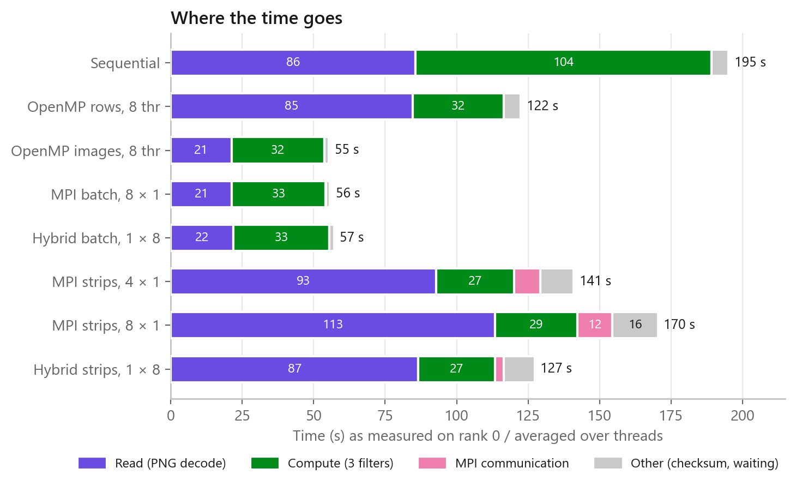
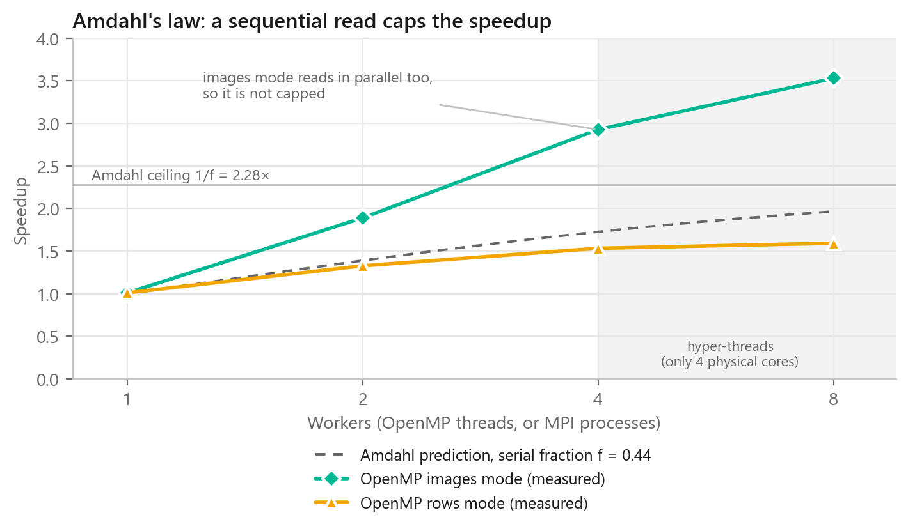

Everything in this project rests on a handful of ideas. This part explains each one with a small example. If you can explain these ten sections in your own words, you can defend the project.
A digital image is a grid of tiny squares called pixels. In a grayscale image each pixel holds a single number from 0 (black) to 255 (white); that range fits exactly in one byte (8 bits). Our X-rays are 1024 × 1024 pixels, so one image is 1,048,576 numbers, about 1 MB in memory.
On disk the images are stored as PNG files. PNG is compressed, like a ZIP file, so before we can use an image the computer must decode (decompress) it. Decoding takes real CPU work. This detail turns out to be one of the most important facts in the whole project (see Section 10 and Part 3).
A kernel is a small grid of weights, for example 3 × 3. Convolution means sliding the kernel over every pixel of the image. At each position, we multiply each weight by the pixel under it, add the products up, and the total becomes the new value of the centre pixel. Different weights produce different effects.
What the diagram shows. The orange cell (90) is the pixel being processed; the eight cells around it are its neighbours. The sharpen kernel gives the centre a weight of 5 and subtracts each of the four direct neighbours once. Because the centre is brighter than its neighbours, the result (214) is even brighter: sharpening exaggerates differences. In a flat area, where all nine pixels are equal, the result equals the original pixel, because the weights add up to 1 (5 − 4 = 1).
Borders. At the edge of the image some neighbours don’t exist. We use the replicate border rule: a missing neighbour copies the nearest real edge pixel. The radius of a kernel is how far it reaches from the centre: 1 for a 3 × 3 kernel, 2 for a 5 × 5 kernel.
Convolution = for every pixel, take a weighted average (or weighted difference) of its neighbourhood. The kernel decides the weights.
| Filter | Kernel | What it does, in simple words |
|---|---|---|
| Gaussian blur 5 × 5 | weights 1-4-6-4-1 in each direction (centre heaviest), total 256, so we divide by 256 | A weighted average of the neighbourhood: smooths noise and softens detail. Near pixels count more than far ones. |
| Sharpen 3 × 3 | centre 5, four neighbours −1 | Boosts a pixel relative to its neighbours, so fine texture and edges stand out. Results are clamped to 0–255. |
| Sobel edge detection two 3 × 3 kernels | Gx: left −, right +; Gy: top −, bottom + | Gx measures how fast brightness changes left→right, Gy top→bottom. Edge strength = √(Gx² + Gy²). Flat areas become black, edges become white. |
A Sobel example. Take a neighbourhood with a dark left side and a bright right side: columns 10, 10, 200. Gx = (200 − 10) + 2·(200 − 10) + (200 − 10) = 760, which we clamp to 255: a strong white edge. On a flat patch (all 10s) both Gx and Gy are 0, so the output is black.
Two implementation details matter later. First, all weights are integers, so the arithmetic is exact: no rounding drift, and the result is identical no matter which computer, thread or process computes it. Second, we compute all three filters in one pass: for each pixel we fetch its neighbourhood once and produce the blurred, sharpened and edge values together.
Sequential means one worker does all the work, one step after another. Parallel means several workers do parts of the work at the same time. The goal is to finish sooner.
What the diagram shows. On the left, threads T0, T1, T2 all point to the same memory, so any thread can read the whole image. On the right, each MPI process (called a rank) has a private memory. If rank 1 needs data that rank 0 has, rank 0 must send it. Sending data costs time; this cost is called communication overhead.
OpenMP is a standard for shared-memory parallelism in C/C++. You add pragmas (special compiler instructions that start with #pragma omp) to ordinary code, and the compiler (with the -fopenmp flag) creates and manages the threads for you.
| Construct | Meaning | Where we use it |
|---|---|---|
#pragma omp parallel for | Split the iterations of the next loop among the threads. | loop over rows, or over images |
schedule(static) | Cut the loop into equal blocks before starting; thread 0 gets the first block, and so on. | default; ideal when every iteration costs the same |
schedule(dynamic, chunk) | Threads grab the next small chunk when they finish one. Better when iterations have uneven cost, but adds overhead. | tested at 8 threads |
schedule(runtime) | Decide static or dynamic when the program runs (we pass it on the command line). | all our loops |
reduction(+ : x) | Every thread gets a private copy of x; at the end the copies are added together. Race-free summing. | checksum and timing totals |
#pragma omp critical | Only one thread at a time may run this block (a lock). | saving an error message |
#pragma omp atomic | A single update (like ++count) done indivisibly, cheaper than critical. | shared progress counter |
| implicit barrier | At the end of a parallel loop, all threads wait until everyone is finished. | end of each image in rows mode |
Why use a reduction for the checksum and not atomic? With atomic, every thread would update the same shared variable 10,000 times and they would queue up at that one variable. A reduction gives each thread its own private copy and adds the copies once at the end: correct and faster.
MPI (Message Passing Interface) is a standard library for distributed-memory programs. You start several copies of the same program with mpiexec -n P program.exe. Each copy is a process with a number, its rank (0 … P−1). The group of all processes is the communicator MPI_COMM_WORLD, and its size is P. Rank 0 usually acts as the coordinator (the “root”). We use Microsoft’s implementation, MS-MPI.
There are two kinds of communication. Point-to-point communication is between two specific processes (send/receive). Collective communication involves every process in the communicator at once.
| MPI call | What it does | Our use |
|---|---|---|
MPI_Init_thread / MPI_Finalize | Start and stop MPI; the “thread” version also says whether threads will be used. | start of every MPI program |
MPI_Comm_rank / _size | “Who am I?” and “how many of us are there?” | decides each rank’s share |
MPI_Bcast | One-to-all copy. | file list; image size |
MPI_Scatterv / MPI_Gatherv | Split / collect, pieces may differ in size. | image strips |
MPI_Reduce | Combine values from all ranks with an operation (SUM). | add up checksums |
MPI_Sendrecv | Send to one rank and receive from another in one call. Safe against deadlock. | halo exchange |
MPI_PROC_NULL | A “nobody” rank: sending to it or receiving from it does nothing. | top and bottom strips have no neighbour |
MPI_Barrier / MPI_Wtime | Everyone waits until all arrive; a high-resolution clock. | start the timer together |
MPI_Abort | Kill all ranks (used on fatal errors). | if an image cannot be read |
Hybrid means using both at once: several MPI processes, and inside each process several OpenMP threads. We write it as P × T (processes × threads); the total number of workers is P × T. For example, 2 × 4 means two processes with four threads each, so 8 workers.
Why bother? On a real cluster, each machine (node) has many cores that share memory, and the machines are connected by a network. The natural design is one MPI process per machine (for communication between machines) plus OpenMP threads inside each machine (to use its cores without sending messages). Fewer processes means fewer messages.
When threads live inside an MPI program, MPI must be told how threads will call it. This is the thread support level:
MPI_THREAD_SINGLE: no threads at all.MPI_THREAD_FUNNELED: threads exist, but only the main thread calls MPI. This is what we use.MPI_THREAD_SERIALIZED: any thread may call MPI, but only one at a time.MPI_THREAD_MULTIPLE: any thread, any time. Most flexible, but slowest.FUNNELED is enough for us because all our MPI calls happen outside the OpenMP parallel loops, so only the main thread ever talks to MPI. It is also the cheapest level that is still correct.
Coarse-grained pieces mean less coordination and less communication, which makes them usually faster. Fine-grained pieces are needed when one piece is too big for one worker, for example a single huge image. Our results prove this rule on real data.
Suppose we split one image into horizontal strips and give each strip to a different MPI process. To blur a pixel in the top row of its strip, a process needs the 2 rows above it (the 5 × 5 kernel has radius 2). But those rows belong to the neighbouring process, in a different memory! The solution is for each process to keep 2 extra rows above and 2 below its strip. These extra rows are called the halo, and they are copied from the neighbours before filtering. That copying step is the halo exchange.
What the diagram shows. Rank 1 owns the orange rows. Before filtering it receives a copy of the last 2 rows of rank 0 and the first 2 rows of rank 2. It only reads the halo rows and never computes outputs for them. Rank 0 (top) has no neighbour above and rank 2 (bottom) none below; for them we use MPI_PROC_NULL, so that half of the exchange simply does nothing.
Why MPI_Sendrecv? If every rank first did a blocking “send down” and then “receive from up”, they could all be stuck sending with nobody receiving: a deadlock. MPI_Sendrecv performs the send and the receive together, so MPI can always complete the exchange.
If a fraction f of the work cannot be parallelised (it must run on one worker), then even with infinitely many workers the run can never be faster than that serial part. The maximum speedup is
Smax = 1 / f and with N workers: S(N) = 1 / ( f + (1 − f) / N )
What the diagram shows. In our sequential run, reading/decoding takes 85.5 s and filtering 103.7 s, so the read is f = 85.5 / 195.1 = 44% of the time. If a version parallelises only the filtering (the green bar), the purple bar never shrinks, and the speedup can never exceed 2.28×, no matter how many cores. The fix is to parallelise the reading too. That is exactly why some of our versions reach 3.5× and others are stuck near 1.5×.
A parallel program is only as fast as its slowest serial part. Always find out where the time goes before parallelising. We measured read, compute and communication time separately for exactly this reason.
Now that the vocabulary is clear, here is what we built, piece by piece, and how the pieces fit together.
Task: take 10,000 chest X-rays and, for every one, produce a blurred, a sharpened and an edge-detected version, as fast as possible on a multi-core computer. The output of every parallel version must be exactly the same as the simple sequential version.
What the diagram shows. Each image goes through four steps. Reading/decoding uses OpenCV (allowed by our proposal, for input/output only). The filtering is our own hand-written code, which is the part the course cares about. The checksum is a fingerprint used to prove correctness (Section 16). Saving is done only for a few images, because writing 30,000 files would turn the experiment into a disk benchmark.

How to read Figure 1. Compare the bottom row. The blur is smoother (the grain disappears), the sharpened image is crisper but also noisier (sharpening amplifies noise as well as detail), and the Sobel image keeps only the outlines (the heart border, vessels and ribs) with everything flat turned black.
| Fact | Value |
|---|---|
| Name and source | NIH ChestX-ray14, released by the US National Institutes of Health Clinical Center (Wang et al., CVPR 2017). 112,120 images in total. |
| What we downloaded | The first 2 of 12 archives: 14,999 images, verified with SHA-256 checksums (stored on drive E:). |
| What we process | The first 10,000 images in file-name order, from 2,587 patients; 3.98 GB of PNG files. |
| Image format | 1024 × 1024 pixels, 8-bit grayscale (about 1% are stored with colour channels; we convert them to gray when loading). |
| Total work | 10.5 billion pixels; 52 multiply–adds per pixel (25 blur + 9 sharpen + 18 Sobel), about 545 billion operations. |
Why this dataset? It is large (the sequential version takes over 3 minutes, so speedups are clearly measurable), uniform (every image is the same size, so differences in time come from our parallel strategy, not from uneven images), real (blur, sharpen and edge detection are genuinely used on X-rays) and single (one dataset, one domain, which our group wanted, and which no other group uses). The disease labels in the dataset are not used: we do image processing, not classification.
“Why 10,000 and not all 15,000?” The proposal promised at least 10,000. That is already large enough for clear measurements, and it keeps one full benchmark pass under an hour. The extra 5,000 images are kept as spare data.
| Tool | What it is / why |
|---|---|
| C++20 | Fast, low-level control over memory; the standard language for OpenMP and MPI. |
| g++ 16.2 (MSYS2) | The GNU compiler on Windows. Flags: -O3 (strong optimisation), -march=native (use every instruction our CPU supports), -fopenmp (enable OpenMP). |
| OpenMP | Shared-memory threads, built into the compiler. |
| MS-MPI 10.1 | Microsoft’s MPI implementation for Windows; provides mpiexec. |
| OpenCV 5.0 | Used only to read and write PNG files (imread/imwrite). We do not use its filters, because the course is about parallelising the computation ourselves. |
| PowerShell scripts | build.ps1 (compile everything with one command), run.ps1 (run with or without mpiexec), benchmark.ps1 (run all experiments). |
| Python (matplotlib) | Only for the graphs. It is not part of the timed programs. |
All programs share one folder of common code (src/common): the kernels, the single convolution function filter_row, image loading, the partitioning helper, the checksum, the timers and the command-line options. On top of it sit five programs:
| Program | Parallel model | Idea |
|---|---|---|
sequential | none (1 core) | The baseline: read, filter, checksum, one image after another. |
openmp --mode rows | OpenMP, fine-grained | Threads share the 1,024 rows of each image. Reading stays on one thread. |
openmp --mode images | OpenMP, coarse-grained | Threads share the list of images; each reads and filters whole images. |
mpi_batch | MPI or hybrid, coarse-grained | Each process gets a block of whole images; inside it, T threads share that block. |
mpi_strips | MPI or hybrid, fine-grained | Every image is cut into strips, one per process, with halo exchange; inside each process, T threads share the strip’s rows. |
The MPI programs take --threads T. With T = 1 they are pure MPI; with T > 1 they are hybrid. So one program covers both MPI and hybrid. There are also two test programs (test_common, validate_opencv).
The main thread reads image 1. Then #pragma omp parallel for splits its 1,024 rows among the threads; each thread writes only its own output rows, so no locks are needed. At the end of the loop there is an implicit barrier: everyone waits, and then the main thread reads image 2. Weakness: while one thread reads, the others sit idle. Reading is the serial part from Amdahl’s law.
The parallel loop runs over the 10,000 images instead. Each thread reads, decodes, filters and fingerprints its own images, so reading is parallel too. Per-thread checksum and timing totals are combined with reduction(+:…); an error message is stored inside a critical section (an exception may not escape a parallel loop); a shared progress counter uses atomic capture.
MPI_Barrier, then the timer starts).MPI_Bcast).split_range (with 8 ranks: 1,250 images each) and processes it. In the hybrid version, T OpenMP threads share the block.MPI_Reduce adds up all the checksums on rank 0.Communication is tiny: one broadcast at the start and one reduce at the end (about 0.2 s in a 55 s run).

How to read Figure 2. On the left (batch), the coloured squares are images; each colour is one rank’s block. Every rank works alone and only the final checksums travel to rank 0. On the right (strips), one image is cut into four coloured strips. The dashed boxes mark the halo rows at each boundary, and the numbered steps on the right repeat for every single image.
MPI_Bcast sends the width and height to all ranks.MPI_Scatterv sends each rank its own rows (the “v” handles strips of unequal size).MPI_Sendrecv calls fill the halo rows: send my top 2 rows up and receive my bottom halo from below, then send my bottom 2 rows down and receive my top halo from above.MPI_Gatherv calls bring the blur, sharpen and edge strips back to rank 0, which fingerprints the full result.That is seven MPI operations per image, 70,000 in total, moving about 4 MB per image (≈ 40 GB overall). The same filter_row function is used here: it receives an ImageView, a window of rows in global image coordinates, so it works on a strip with halo exactly as on a whole image.
A fast program that gives wrong answers is worthless, so correctness was checked in three independent ways.
reduction and MPI_Reduce. Every one of our 54 benchmark runs printed the same checksum, f3eee2e41bf6a7ce, as the sequential program.filter2D and Sobel. Sharpen and Sobel are 100% identical. The blur is identical for 99.82% of pixels; the other 0.18% are exact “.5” cases where we round up and OpenCV rounds to the nearest even number (both are valid rounding rules). There are 0 genuine mismatches.“How do you know your parallel output is correct?” Every run reports a checksum over all 30,000 output images, and all 54 runs match the sequential checksum exactly. Integer kernels make the computation deterministic, so even one wrong pixel would change the checksum.
scripts/benchmark.ps1, which can resume if interrupted.For each graph: first how to read it, then what it tells us. All numbers are the mean of two runs on 10,000 images.
| Version | Workers | Time | Speedup | Efficiency |
|---|---|---|---|---|
| Sequential | 1 | 195.1 s | 1.00× | 100% |
| OpenMP images mode | 8 threads | 55.3 s | 3.53× | 44% |
| MPI batch | 8 processes | 55.7 s | 3.50× | 44% |
| Hybrid batch (1×8, 2×4, 4×2) | 8 | 56.7–57.1 s | ≈3.43× | 43% |
| OpenMP rows mode | 8 threads | 122.4 s | 1.59× | 20% |
| Hybrid strips, best (1 × 8) | 8 | 127.3 s | 1.53× | 19% |
| MPI strips, best (4 processes) | 4 | 141.0 s | 1.38× | 35% |
| MPI strips | 8 processes | 170.4 s | 1.14× | 14% |
Versions that give each worker whole images (and so also parallelise the reading) reach 3.5×. Versions that split each image are stuck near 1.5×, because one worker still reads every image and the workers must communicate and synchronise for every image.

How to read it. The x-axis is the number of workers (1, 2, 4, 8); the y-axis is seconds, so lower is better. The dashed line is the sequential time. The grey area marks workers 5–8, which are hyper-threads, not extra cores. The blue (MPI batch) and green (OpenMP images) lines lie on top of each other.
What it tells us. Batch and images mode drop steeply: 195 → 103 → 67 → 55 s. Rows mode and strips flatten early, and strips actually gets worse from 4 to 8 processes (141 → 170 s). Coarse beats fine.

How to read it. Higher is better. A line that follows the dashed one would be perfect scaling. What it tells us. Up to 2 workers, batch and images mode are almost perfect (1.9×). At 4 workers they reach 2.9×, at 8 workers 3.5×. Rows mode and strips never get above about 1.6×.

How to read it. 100% means every worker is fully useful. What it tells us. The coarse versions keep 95% at 2 workers and 73% at 4, then fall to 44% at 8. That drop is hyper-threading: 8 threads on 4 physical cores gain only about 20% over 4 threads, because two threads share one core’s execution units. Even at 4 workers we lose some efficiency, because the CPU lowers its clock speed when all cores are busy (turbo boost is highest with one active core) and all cores share one cache and memory bus. The fine-grained versions fall to about 65% already at 2 workers: their serial part dominates.

How to read it. Each pair of bars uses 8 workers in total; only the split changes (1 × 8 = one process with 8 threads … 8 × 1 = eight single-threaded processes). Lower is better.
What it tells us. For batch (blue) the split does not matter: about 57 s every time. Batch hardly communicates, and on one machine threads and processes compete for the same 4 cores in the same way. For strips (orange) the split matters a lot: 127 s with 1 × 8 vs 170 s with 8 × 1. With fewer processes there are fewer participants in every collective call and fewer halo exchanges, and fewer processes busy-wait and steal CPU from rank 0. This is the case for hybrid programming: when communication matters, replace processes with threads.

How to read it. The full bar length is the total time; the coloured parts add up to it. “Other” is mostly checksumming and waiting.
What it tells us. This graph explains every other result. The green compute part shrinks to about 27–33 s in every parallel version. The difference between fast and slow versions is entirely the purple read part: about 21 s when every worker reads its own images, but 85 s or more when one thread or rank reads everything (rows mode, all strip versions). For strips with 8 processes, reading even grows to 113 s. The seven waiting processes busy-poll inside MPI, steal CPU from rank 0, and slow down its reading. On top of that come 12 s of communication.

How to read it. The dashed curve is what Amdahl’s formula predicts when 44% of the work is serial; the flat grey line is its ceiling (2.28×). What it tells us. Rows mode (yellow) follows the prediction and stays under the ceiling; it is slightly below the curve because of hyper-threading and clock effects. Images mode (green) breaks through the “ceiling” because it parallelises the reading as well, so its serial fraction is almost zero. Lesson: the bottleneck was not the convolution we set out to parallelise, but the PNG decoding around it.
Not graphed, because the result is “no difference”: 122.4 s vs 123.0 s (rows), 55.3 s vs 55.7 s (images). All images are the same size and all rows cost the same, so static scheduling is already perfectly balanced, and dynamic only adds a little bookkeeping. Dynamic would help if images had different sizes.
Examiners love “why” questions. Every important choice in the project is listed here with its reason.
| Decision | Why |
|---|---|
| Problem and data | |
| A batch of many images (not one giant image) | The proposal says “at least 10,000 images”, and real workloads (hospital archives, ML training sets) look like this. We still implemented strip decomposition to show the halo technique. |
| NIH ChestX-ray14, one dataset | Public, large, uniform 1024×1024 images, medically meaningful; unique among the groups; one domain keeps the story simple. |
| 10,000 of 14,999 images | Meets the proposal’s target; a full pass stays under an hour on a laptop; the rest is spare. |
| Grayscale only | X-rays are gray by nature; one channel keeps the code simple (the ~1% RGBA files are converted on load). |
| Computation | |
| Hand-written convolution; OpenCV only for file I/O | The course is about parallelising computation ourselves; this is also what the proposal promised. |
| Integer kernel weights | Exact arithmetic gives deterministic, bit-identical results in every version, which is what makes checksum verification possible. |
| All three filters in one pass | Each neighbourhood is loaded from memory once instead of three times, which is faster. |
| Replicate border | The standard choice (also OpenCV’s option); avoids dark frames that zero-padding would create. |
| Fast interior path, clamped border path | More than 99% of pixels need no bounds checks; separating them speeds up the inner loop. |
One shared filter_row for every version | Fair comparison: any difference in speed comes from parallelisation, not from different filtering code. |
| Parallel design | |
| Two OpenMP modes (rows, images) | To compare fine and coarse granularity under the same model, and to demonstrate Amdahl’s law directly. |
| Two MPI strategies (batch, strips) | Batch is the best fit for many images; strips is what the project description mentions (“partition image rows/tiles”) and shows halo exchange. Comparing them is the core insight. |
Block partitioning (split_range) | Images cost the same, so equal contiguous blocks are already balanced, with no coordination needed. |
MPI_Sendrecv for halos | Deadlock-free by design and simple; MPI_PROC_NULL removes special cases at the edges. |
Scatterv/Gatherv (with “v”) | The image height need not divide evenly by the number of processes. |
MPI_THREAD_FUNNELED | Only the main thread calls MPI, outside parallel regions; this is the cheapest correct level. |
reduction instead of atomic/critical for sums | No contention: private copies, combined once. |
| Checksum combined by addition | Order-independent, so it works with any thread/rank finishing order and with reductions. |
schedule(runtime) | Lets us test static vs dynamic without recompiling. |
MPI program = hybrid with --threads 1 | One code base for both, so MPI-only and hybrid runs are directly comparable. |
| Measurement | |
| Save only a few output images | Writing 30,000 PNGs would measure the disk, not our parallel computing. |
| Separate read / compute / comm timers | To explain results, not just report them (this is how we found the 44% serial read). |
| Two repeats, repeat loop outermost | Exposes noise (one 50.1 s “record” turned out to be luck) and spreads any drift evenly across configurations. |
| Quiet machine, antivirus exclusion, Best performance | An early run with background activity took 559 s instead of ~200 s; the antivirus scanned every file we read. |
| Windows + MSYS2 g++ + MS-MPI | The laptop we have runs Windows; this combination supports C++20, OpenMP and MPI natively. |
Every member must be able to explain the whole project. Practise the one-minute summary aloud, make sure you can answer the questions below in your own words, and know where things are in the code.
“We apply three convolution filters (Gaussian blur, sharpen and Sobel edge detection) to 10,000 chest X-rays from the NIH ChestX-ray14 dataset. The convolution is written by hand in C++; OpenCV only reads and writes the files. We parallelised it with OpenMP, MPI and hybrid MPI + OpenMP, in two ways: giving each worker whole images, and splitting each image into strips with halo exchange. Sequentially it takes 195 seconds. Whole-image distribution brings that to 55 seconds, a 3.5× speedup on our 4-core laptop, with every version producing bit-identical output, verified by checksum. Strip decomposition only reaches about 1.5×, because one process still reads every image, which is 44% of the work (Amdahl’s law), and because it must communicate for every image. Hybrid helps there: 1 process × 8 threads is 25% faster than 8 processes.”
parallel for, static/dynamic, reduction, critical, atomic, barrierIt filters 10,000 X-rays with blur, sharpen and edge detection. Every output pixel is independent, so pixels, rows or whole images can be computed at the same time by different threads or processes. We compare OpenMP, MPI and hybrid versions against a sequential baseline.
The MPI programs (mpi_batch, mpi_strips) run P processes, and inside each process OpenMP threads share that process’s work. MPI_Init_thread with FUNNELED enables this. We tested the splits 1×8, 2×4, 4×2, 8×1 and 2×2.
Because the point of the course is to parallelise the computation ourselves. OpenCV’s filters are already internally optimised and parallel, so using them would hide the work. OpenCV is used only to decode and encode PNG files.
Yes for learning and comparing: the processes really have separate memories and really exchange messages (through shared memory instead of a network). The limitation is that communication is cheaper than on a real cluster, so strip decomposition would look even worse on a network, and hybrid even better.
Rows mode splits the rows of one image among threads (fine-grained); reading stays on one thread. Images mode gives each thread whole images (coarse-grained), so reading is parallel too. Images mode reaches 3.53× and rows mode only 1.59×.
On the shared checksum and timing totals, the error message and the progress counter. We used reduction(+:…) for the sums, critical for the error string and atomic capture for the counter. The filter itself needs no protection: each thread writes only its own rows or images.
Every image is 1024×1024 and every row costs the same, so static blocks are already balanced. Dynamic scheduling only adds the cost of threads repeatedly asking for new chunks. It helps when the work per iteration varies.
At the end of every #pragma omp parallel for, threads wait until all have finished. In rows mode it guarantees that an image is completely filtered before the next one is read.
Rank 0 lists the files and broadcasts the list (MPI_Bcast). Each rank computes its own block of images with split_range and works independently. At the end, MPI_Reduce adds the checksums on rank 0, and MPI_Gather collects per-rank timings for the report. That is almost no communication: about 0.2 s.
Rank 0 reads the image; Bcast the size; Scatterv each rank its rows; two Sendrecv calls exchange 2 halo rows with each neighbour; each rank filters its rows (with OpenMP threads in the hybrid version); three Gatherv calls collect blur, sharpen and edges on rank 0, which computes the checksum. That is seven MPI operations per image.
The largest kernel is the 5×5 blur, with radius 2: a pixel needs 2 rows above and 2 below. The 3×3 kernels need only 1, so 2 covers all of them.
If every rank calls a blocking Send first, they can all wait for a receiver that never comes: deadlock. Sendrecv does both together, and MPI guarantees it completes. MPI_PROC_NULL handles the top and bottom ranks, which have no neighbour.
Plain Scatter requires equal pieces. 1,024 rows divided among 3 processes is not equal (342, 341, 341), so we need the “v” versions with per-rank counts and offsets.
Two reasons. More processes means more communication (about 12 s). More importantly, the waiting processes busy-poll inside MPI, and 8 processes on 4 cores steal CPU time from rank 0, whose reading slows from 85 s to 113 s. Since rank 0’s reading is the bottleneck, the whole run slows down.
Threads exist, but only the main thread makes MPI calls. All our MPI calls are outside the OpenMP loops, so that rule always holds. Higher levels such as MULTIPLE would add locking overhead inside MPI for nothing.
Batch barely communicates, so processes and threads behave the same on one machine (~57 s for every split). Strips communicates for every image, so fewer processes (1 × 8) means fewer and smaller collective operations and less busy-waiting: 127 s vs 170 s.
Only 4 cores are real; hyper-threads share a core, so 4 → 8 threads gave only about 20% more. On top of that, the CPU runs at a lower clock when all cores are busy, and the cores share cache and memory bandwidth. 3.5× on 4 cores is a good result.
S(N) = 1 / (f + (1 − f)/N), with maximum 1/f. Reading is 85.5 of 195.1 s, so f = 0.44 and the maximum is 2.28× for any version that reads serially. Rows mode measured 1.59× at 8 threads, under the curve as predicted; images mode avoids the limit by reading in parallel.
No: PNG files are compressed, so reading means decompressing, which is CPU work. Proof: reading time fell from 85.5 s to 45.4 s to 28.8 s with 1, 2, 4 parallel readers. A disk bottleneck would not speed up like that.
That is measurement noise of about 1%: those runs were slightly faster than the sequential run. That is also why we repeated every run twice and report means.
A 64-bit FNV-1a checksum over all 30,000 output images; all 54 runs equal the sequential checksum f3eee2e41bf6a7ce. In addition: 9 unit tests (including strips + halos = whole image) and a comparison with OpenCV (sharpen and Sobel 100% identical, blur differs only in .5 rounding ties).
Addition gives the same result in any order. Threads and ranks finish in unpredictable order, and reductions combine values in an unspecified order, so we need an order-independent combination.
Block partitioning with split_range(total, parts, index): each part gets total/parts items and the first total%parts parts get one extra. With 8 processes, each gets 1,250 images.
In strips, overlap reading and computing (rank 0 decodes the next image while the others filter), or let ranks take turns reading; run on a real multi-node cluster; vectorise the kernel with SIMD and use cache blocking.
| Fact | Number |
|---|---|
| Images / resolution / size | 10,000 · 1024 × 1024 · 3.98 GB (from 14,999 downloaded) |
| Hardware | Intel i7-8565U, 4 cores / 8 threads, 16 GB RAM, Windows 11 |
| Sequential time (read + compute) | 195.1 s (85.5 s + 103.7 s) |
| Best time / speedup | 55.3 s (OpenMP images, 8 threads) · 3.53×; MPI batch 8 procs 55.7 s · 3.50× |
| Efficiency at 2 / 4 / 8 workers (batch) | 94% / 73% / 44% |
| OpenMP rows mode, 8 threads | 122.4 s · 1.59× |
| Strips: best pure MPI / 8 processes / best hybrid | 141.0 s (4 procs) · 170.4 s · 127.3 s (1 × 8) |
| Serial fraction / Amdahl ceiling | f = 0.44 · 2.28× |
| Hyper-threading gain (4 → 8 threads) | ≈ 20% (66.6 s → 55.3 s) |
| Benchmark | 27 configurations × 2 repeats = 54 runs, ~1 h 50 min |
| Correctness | checksum f3eee2e41bf6a7ce in 54/54 runs; 9/9 tests; OpenCV match (0 real mismatches) |
| Halo / MPI ops per image (strips) | 2 rows per side · 7 operations · ≈ 4 MB per image |
Run these from the project folder in PowerShell. Use --count to keep the demo short; every program prints its time and checksum, and for the same count all versions print the same checksum. That is a great thing to show the examiner.
# build everything (one command) powershell -ExecutionPolicy Bypass -File scripts\build.ps1 # unit tests powershell -ExecutionPolicy Bypass -File scripts\run.ps1 test_common # sequential vs OpenMP on 500 images (compare the time and the checksum) powershell -ExecutionPolicy Bypass -File scripts\run.ps1 sequential --count 500 powershell -ExecutionPolicy Bypass -File scripts\run.ps1 openmp --count 500 --threads 8 --mode images # MPI batch with 4 processes, then hybrid 2 processes x 4 threads powershell -ExecutionPolicy Bypass -File scripts\run.ps1 -Procs 4 mpi_batch --count 500 powershell -ExecutionPolicy Bypass -File scripts\run.ps1 -Procs 2 mpi_batch --count 500 --threads 4 # MPI strips with halo exchange (prints the per-rank table) powershell -ExecutionPolicy Bypass -File scripts\run.ps1 -Procs 4 mpi_strips --count 100 # save a few filtered images to show the result powershell -ExecutionPolicy Bypass -File scripts\run.ps1 sequential --count 5 --save 5
If you get a question you can’t answer immediately, go back to the two ideas everything rests on: granularity (whole images vs pieces of an image) and Amdahl’s law (the serial read). Almost every result in this project is explained by one of them.